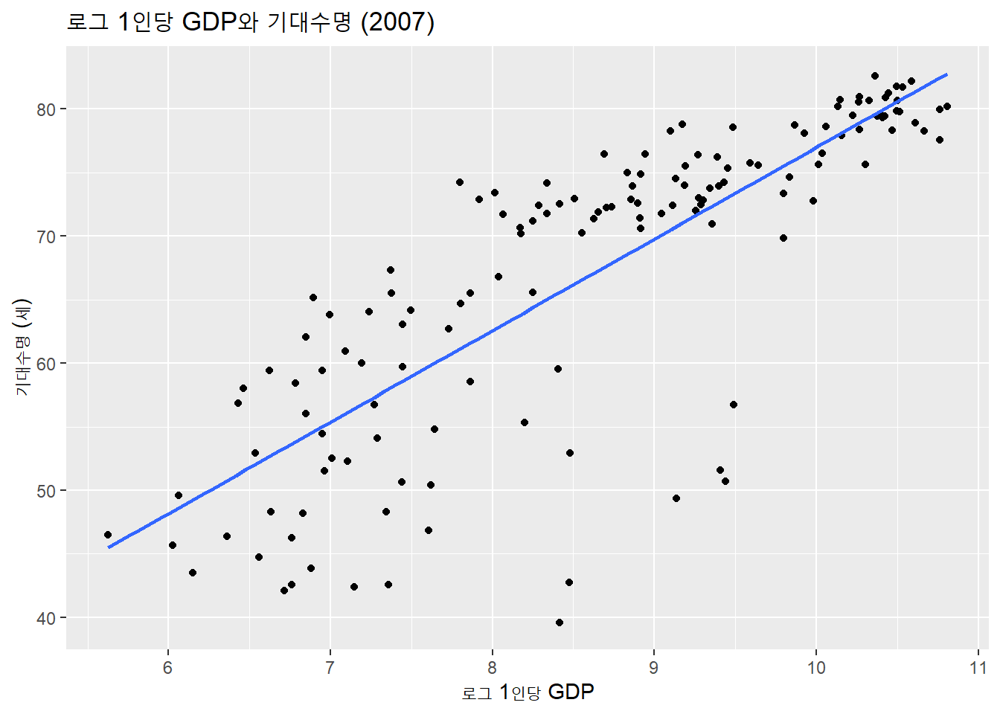
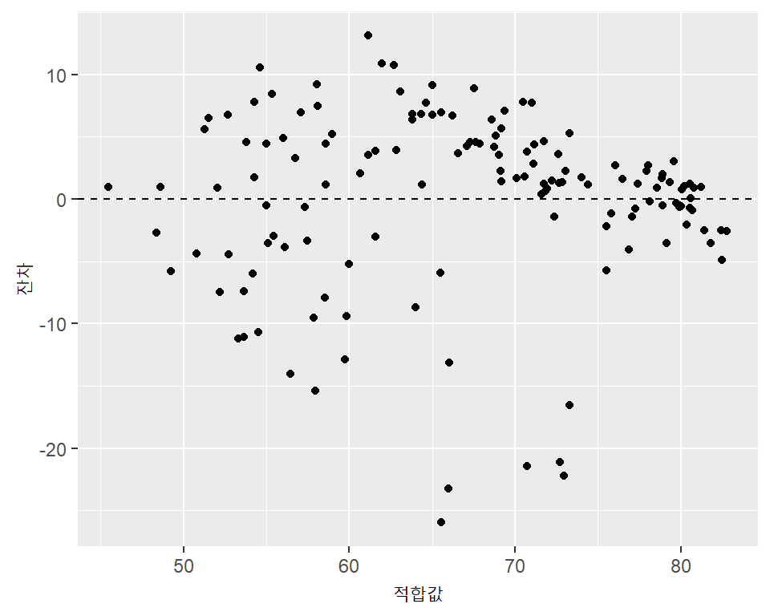
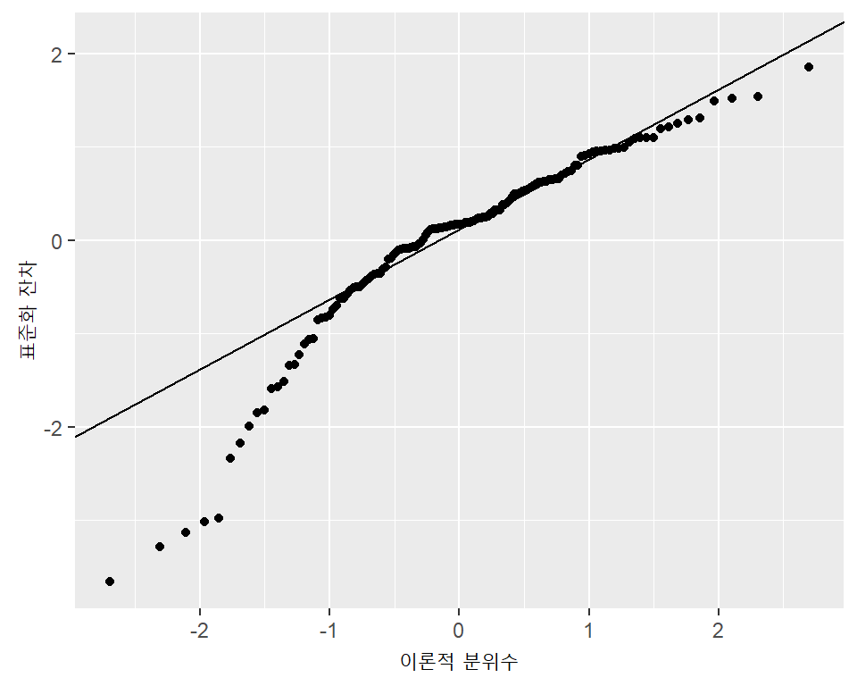
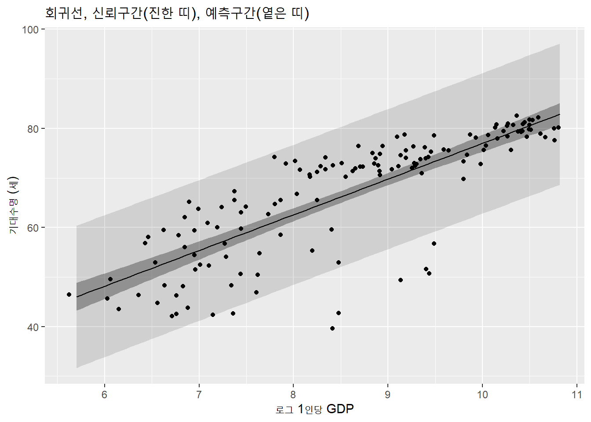
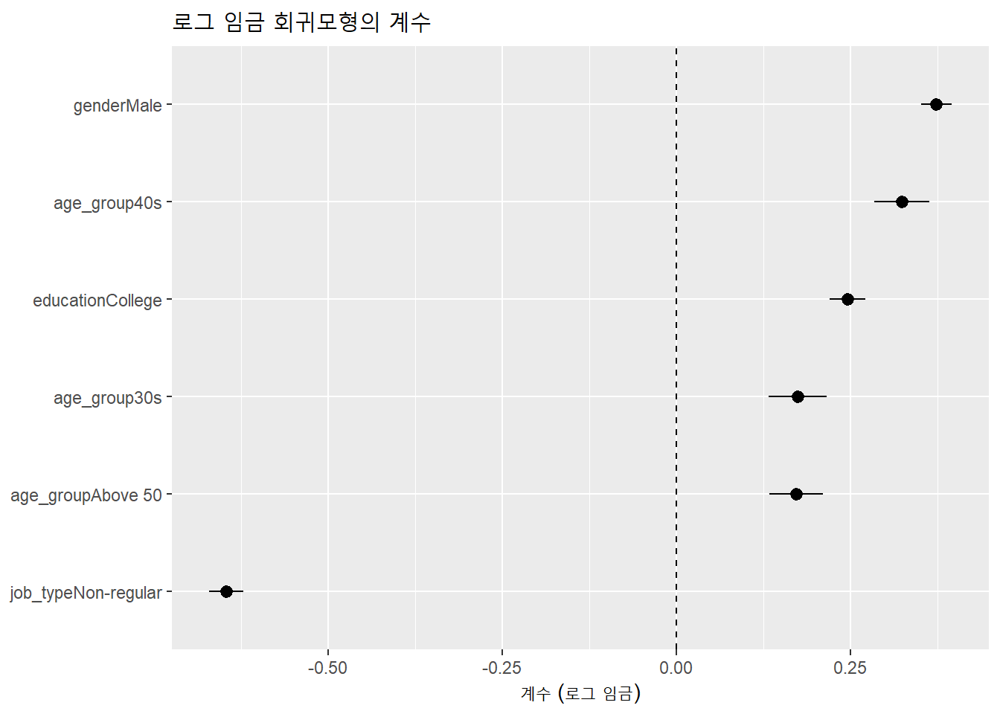
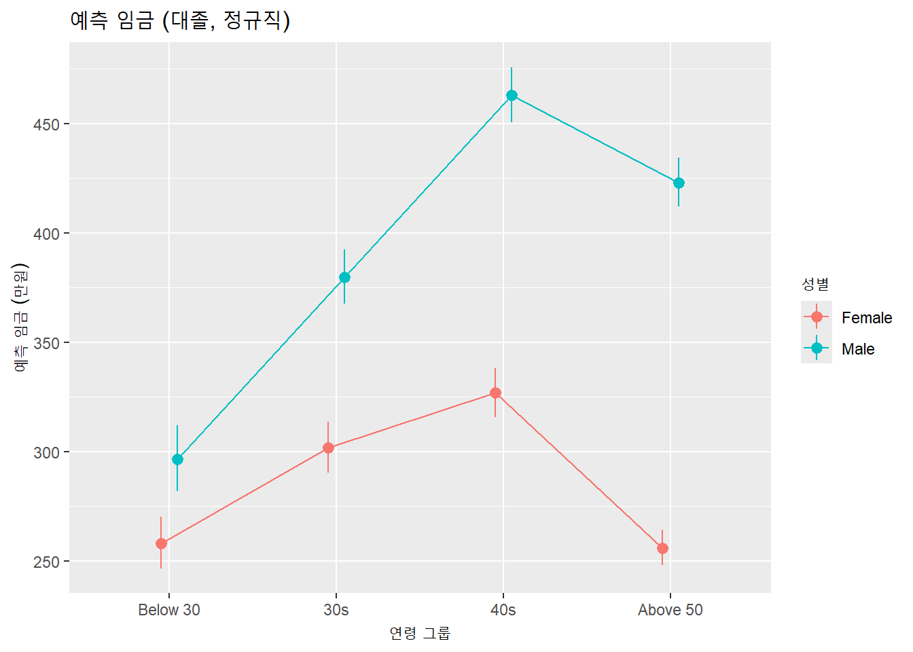
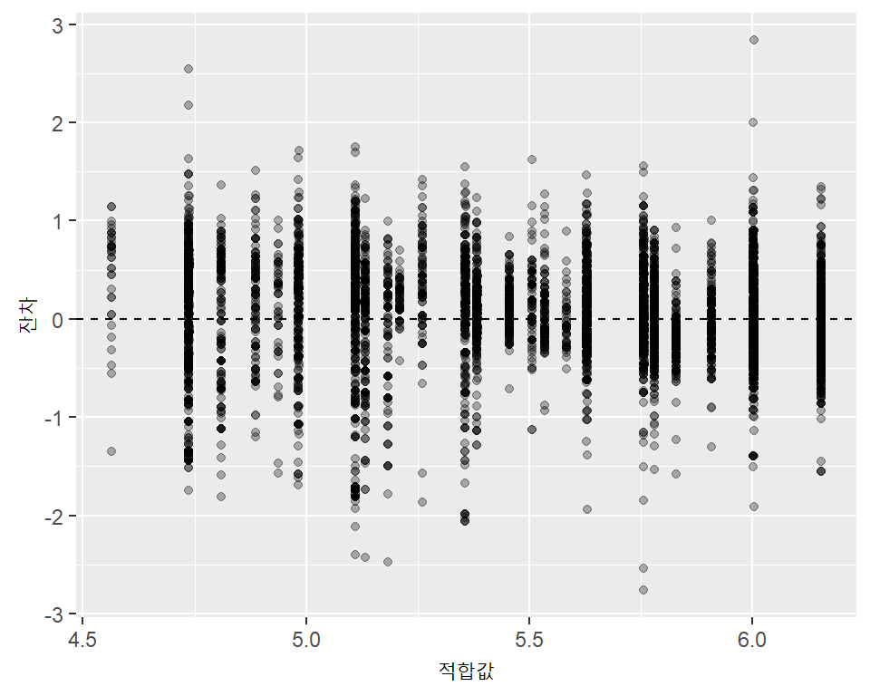

library(tidyverse)
library(skimr)
library(janitor)
library(broom) # 회귀분석 결과를 데이터 프레임으로 정리
library(gapminder)7주차. 선형회귀분석
1 이번 주 내용
- 지금까지는 변수의 분포를 그리고 집단 사이의 평균을 비교하는 방식으로 변수 사이의 관계를 살펴보았음
- 4주차: 성별에 따른 임금 비교 (
t.test()) - 6주차: 로그 GDP와 로그 수출의 산점도에
geom_smooth(method = "lm")으로 직선을 추가
- 4주차: 성별에 따른 임금 비교 (
- 이번 주에는 이 직선을 실제로 추정하고 그 결과를 읽는 방법을 배움
lm()으로 회귀모형을 추정하고 결과를 해석- 범주형 변수와 여러 설명변수를 포함하는 다중회귀
- 결과를 차트로 표현
- 추정된 모형으로 예측
broom패키지는tidyverse를 설치할 때 함께 설치되지만library(tidyverse)로 자동으로 불러와지지는 않으므로 따로 불러야 함
2 단순회귀: 1인당 GDP와 기대수명
2.1 선형회귀모형
- 종속변수 \(y\)를 설명변수 \(x\)의 직선으로 설명하는 모형
\[ y_i = \beta_0 + \beta_1 x_i + \varepsilon_i \]
\(\beta_0\): 절편, \(\beta_1\): 기울기, \(\varepsilon_i\): 오차항 (직선으로 설명되지 않는 부분)
최소제곱법 (OLS): 잔차 제곱합 \(\sum (y_i - \hat\beta_0 - \hat\beta_1 x_i)^2\)을 가장 작게 만드는 \(\hat\beta_0, \hat\beta_1\)을 선택
1주차에서 사용한
gapminder의 2007년 자료를 사용- 먼저 산점도를 그려서 직선관계가 적절한지 확인하는 것이 좋음
g07 <- gapminder |>
filter(year == 2007)
g07 |>
ggplot(aes(x = gdpPercap, y = lifeExp)) +
geom_point() +
geom_smooth(method = "lm", se = FALSE) +
labs(title = "1인당 GDP와 기대수명 (2007)",
x = "1인당 GDP (달러)", y = "기대수명 (세)")
- 1인당 GDP가 낮은 구간에서는 급하게 증가하다가 높은 구간에서는 완만해지는 곡선 모양이므로 직선은 적절하지 않음
- 1인당 GDP에 로그를 취하면 관계가 훨씬 직선에 가까워짐
g07 |>
ggplot(aes(x = log(gdpPercap), y = lifeExp)) +
geom_point() +
geom_smooth(method = "lm", se = FALSE) +
labs(title = "로그 1인당 GDP와 기대수명 (2007)",
x = "로그 1인당 GDP", y = "기대수명 (세)")
2.2 lm()으로 추정하기
lm(종속변수 ~ 설명변수, data = 데이터)- 변수에
log()등 변환을 적용한 식을 그대로 쓸 수 있음 - 결과는 모형 객체이며 5주차에서 배운 base R의 리스트 구조를 가짐
- 변수에
fit1 <- lm(lifeExp ~ log(gdpPercap), data = g07)
summary(fit1)
Call:
lm(formula = lifeExp ~ log(gdpPercap), data = g07)
Residuals:
Min 1Q Median 3Q Max
-25.947 -2.661 1.215 4.469 13.115
Coefficients:
Estimate Std. Error t value Pr(>|t|)
(Intercept) 4.9496 3.8577 1.283 0.202
log(gdpPercap) 7.2028 0.4423 16.283 <2e-16 ***
---
Signif. codes: 0 '***' 0.001 '**' 0.01 '*' 0.05 '.' 0.1 ' ' 1
Residual standard error: 7.122 on 140 degrees of freedom
Multiple R-squared: 0.6544, Adjusted R-squared: 0.652
F-statistic: 265.2 on 1 and 140 DF, p-value: < 2.2e-162.3 결과의 해석
Estimate(추정계수)- 기울기 7.20: 로그 1인당 GDP가 1 증가하면 기대수명이 평균적으로 약 7.2세 길어지는 관계
- 절편 4.95: 로그 1인당 GDP가 0 (1인당 GDP = 1달러)일 때의 기대수명. 자료의 범위를 벗어난 값이므로 그 자체로는 큰 의미가 없음
Std. Error(표준오차): 추정계수가 표본에 따라 흔들리는 정도t value,Pr(>|t|): 계수가 0이라는 귀무가설에 대한 검정 통계량과 p값- 기울기의 p값이 매우 작으므로 로그 GDP와 기대수명 사이의 관계가 0이라고 보기 어려움
Residual standard error7.12: 잔차의 표준편차. 모형으로 예측했을 때 대략 ±7세 정도의 오차가 있다는 의미Multiple R-squared0.654: 기대수명의 변동 중 로그 GDP로 설명되는 비율이 약 65%로그를 사용한 변수의 해석
- 설명변수만 로그인 경우 (level-log): \(x\)가 1% 증가하면 \(y\)가 약 \(\beta_1/100\) 증가
- 1인당 GDP가 2배가 되면 기대수명은 \(\hat\beta_1 \times \ln 2\) 증가
b <- coef(fit1)[["log(gdpPercap)"]]
b * log(2) # 1인당 GDP가 2배가 되면[1] 4.992602b * log(1.1) # 1인당 GDP가 10% 증가하면[1] 0.6865003- 불확실성: 신뢰구간
confint(fit1) 2.5 % 97.5 %
(Intercept) -2.677237 12.57646
log(gdpPercap) 6.328273 8.07733기울기의 95% 신뢰구간은 대략 6.3 ~ 8.1
이 표본으로부터 얻은 추정값이 모집단의 참값과 얼마나 다를 수 있는지를 나타냄
해석 시 주의
- 이 결과는 2007년 국가 사이의 관계(상관관계)를 보여줄 뿐, 한 나라의 소득이 올라가면 기대수명이 그만큼 길어진다는 인과관계를 의미하지 않음
- 6주차에서 FTA 체결 국가와 미체결 국가의 수출 차이를 FTA의 효과로 읽기 어려웠던 것과 같은 이유임
2.4 결과를 데이터 프레임으로 정리하기: broom
summary()의 출력은 읽기에는 좋지만 후속 작업(표, 그래프)에 쓰기 불편함broom패키지의 세 함수는 결과를 데이터 프레임으로 돌려줌
| 함수 | 반환하는 내용 |
|---|---|
tidy() |
계수 표 (추정값, 표준오차, p값, 신뢰구간) |
glance() |
모형 전체의 요약 (R제곱, 잔차 표준오차, 관측치 수 등) |
augment() |
원자료에 적합값(.fitted)과 잔차(.resid) 등을 추가 |
tidy(fit1, conf.int = TRUE)# A tibble: 2 × 7
term estimate std.error statistic p.value conf.low conf.high
<chr> <dbl> <dbl> <dbl> <dbl> <dbl> <dbl>
1 (Intercept) 4.95 3.86 1.28 2.02e- 1 -2.68 12.6
2 log(gdpPercap) 7.20 0.442 16.3 4.12e-34 6.33 8.08glance(fit1) |>
select(r.squared, adj.r.squared, sigma, nobs)# A tibble: 1 × 4
r.squared adj.r.squared sigma nobs
<dbl> <dbl> <dbl> <int>
1 0.654 0.652 7.12 1422.5 적합값과 잔차
- 적합값 \(\hat y_i\): 모형이 예측한 값, 잔차 \(e_i = y_i - \hat y_i\): 실제값과 적합값의 차이
- 잔차가 큰 관측치는 모형으로 설명이 잘 되지 않는 국가들임
g07_fit <- augment(fit1, data = g07)
# 실제 기대수명이 모형 예측보다 가장 낮은 국가
g07_fit |>
select(country, continent, lifeExp, .fitted, .resid) |>
slice_min(.resid, n = 5)# A tibble: 5 × 5
country continent lifeExp .fitted .resid
<fct> <fct> <dbl> <dbl> <dbl>
1 Swaziland Africa 39.6 65.6 -25.9
2 Angola Africa 42.7 66.0 -23.3
3 Botswana Africa 50.7 72.9 -22.2
4 South Africa Africa 49.3 70.7 -21.4
5 Equatorial Guinea Africa 51.6 72.7 -21.1# 실제 기대수명이 모형 예측보다 가장 높은 국가
g07_fit |>
select(country, continent, lifeExp, .fitted, .resid) |>
slice_max(.resid, n = 5)# A tibble: 5 × 5
country continent lifeExp .fitted .resid
<fct> <fct> <dbl> <dbl> <dbl>
1 Vietnam Asia 74.2 61.1 13.1
2 Nicaragua Americas 72.9 62.0 10.9
3 West Bank and Gaza Asia 73.4 62.7 10.7
4 Comoros Africa 65.2 54.6 10.5
5 Korea, Dem. Rep. Asia 67.3 58.1 9.24- 소득에 비해 기대수명이 매우 낮은 국가들은 어느 대륙에 몰려 있는가? 그 이유는 무엇일까?
2.6 잔차를 이용한 모형 점검
- 선형회귀모형이 적절하다면 잔차에 뚜렷한 패턴이 없어야 함
- 잔차 대 적합값 그림: 0을 중심으로 고르게 흩어져 있어야 함. 곡선 모양이나 부채꼴 모양은 문제의 신호
- 정규 Q-Q 그림: 점이 직선 위에 놓일수록 잔차가 정규분포에 가까움
g07_fit |>
ggplot(aes(x = .fitted, y = .resid)) +
geom_point() +
geom_hline(yintercept = 0, linetype = "dashed") +
labs(x = "적합값", y = "잔차")
g07_fit |>
ggplot(aes(sample = .std.resid)) +
stat_qq() +
stat_qq_line() +
labs(x = "이론적 분위수", y = "표준화 잔차")
- 기대수명이 낮은 국가들의 잔차가 큰 음수로 나타나 왼쪽 꼬리가 두꺼운 분포임
- 이런 관측치를 제거하기보다는 왜 그런지를 먼저 이해하고, 필요하면 대륙 등 다른 변수를 모형에 포함
2.7 예측
- 추정한 모형에 새로운 값을 넣어 종속변수를 예측:
predict(모형, newdata = 새 데이터)newdata의 변수 이름은 모형 추정에 사용한 원래 변수 이름(gdpPercap)과 같아야 하며,log()변환은 모형이 알아서 적용함
new_gdp <- tibble(gdpPercap = c(1000, 10000, 40000))
predict(fit1, newdata = new_gdp) 1 2 3
54.70480 71.28987 81.27507 - 예측에는 두 가지 구간이 있음
- 신뢰구간 (
interval = "confidence"): 주어진 GDP 수준에서 기대수명의 평균이 어디쯤인지에 대한 불확실성 - 예측구간 (
interval = "prediction"): 주어진 GDP 수준의 개별 국가 하나의 기대수명이 어디쯤일지에 대한 불확실성. 개별 국가의 오차가 추가되므로 항상 더 넓음
- 신뢰구간 (
predict(fit1, newdata = new_gdp, interval = "confidence") fit lwr upr
1 54.70480 52.80020 56.60941
2 71.28987 69.99887 72.58086
3 81.27507 79.17812 83.37202predict(fit1, newdata = new_gdp, interval = "prediction") fit lwr upr
1 54.70480 40.49550 68.91411
2 71.28987 57.14973 85.43000
3 81.27507 67.03871 95.51143- 1인당 GDP가 10,000달러인 국가의 기대수명은 평균적으로 약 71세이며 평균의 95% 신뢰구간은 약 70 ~ 72.6세인 반면, 개별 국가 하나에 대한 예측구간은 약 57 ~ 85세로 훨씬 넓음
- 외삽 (extrapolation) 주의: 자료에 있는 범위를 크게 벗어난 값에 대한 예측은 신뢰하기 어려움
- 1인당 GDP 40,000달러의 예측구간 상한은 95세를 넘는데, 이는 현실적이지 않음
- 예측 결과를 그래프로 나타내기
- 설명변수의 격자 (grid)를 만들고
predict()로 예측값과 구간을 계산한 후ggplot으로 그림
- 설명변수의 격자 (grid)를 만들고
grid <- tibble(gdpPercap = exp(seq(log(300), log(50000), length.out = 100)))
pred <- bind_cols(
grid,
as_tibble(predict(fit1, grid, interval = "confidence")),
as_tibble(predict(fit1, grid, interval = "prediction")) |>
select(pred_lwr = lwr, pred_upr = upr)
)
ggplot() +
geom_ribbon(data = pred, aes(x = log(gdpPercap), ymin = pred_lwr, ymax = pred_upr),
alpha = 0.15) +
geom_ribbon(data = pred, aes(x = log(gdpPercap), ymin = lwr, ymax = upr),
alpha = 0.4) +
geom_line(data = pred, aes(x = log(gdpPercap), y = fit)) +
geom_point(data = g07, aes(x = log(gdpPercap), y = lifeExp)) +
labs(title = "회귀선, 신뢰구간(진한 띠), 예측구간(옅은 띠)",
x = "로그 1인당 GDP", y = "기대수명 (세)")
- 대부분의 관측치가 예측구간(옅은 띠) 안에 있고, 신뢰구간(진한 띠)은 훨씬 좁음
geom_smooth(method = "lm")이 기본으로 그려주는 띠는 신뢰구간임
3 다중회귀: 임금의 결정요인
3.1 데이터와 변수의 준비
- 4주차의 KLIPS 데이터(
klips27p_small.csv)를 다시 사용- 4주차에서는 성별에 따른 임금 분포를 비교하였으나, 남녀의 임금 차이에는 연령, 학력, 고용형태의 차이도 섞여 있음
- 다중회귀는 이러한 다른 변수들을 통제한 후의 관계를 보여줌
- 임금은 오른쪽으로 크게 치우쳐 있으므로 4주차에서 본 것처럼 로그를 취해서 분석
- 종속변수가 로그 임금이면 계수는 임금의 비율(%) 차이로 해석할 수 있음
- 범주형 변수는
factor로 바꾸고 기준 범주(reference category)를 정해야 함lm()은 첫 번째 레벨을 기준으로 삼고 나머지 레벨마다 더미변수를 자동으로 만듦- 문자형 변수의 기본 순서는 알파벳 순서이므로
fct_relevel()로 해석하기 편한 기준을 지정
klips <- read_csv("data/klips27p_small.csv") |>
mutate(
gender = fct_relevel(gender, "Female", "Male"),
age_group = fct_relevel(age_group, "Below 30", "30s", "40s", "Above 50"),
education = fct_relevel(education, "High School", "College"),
job_type = fct_relevel(job_type, "Regular", "Non-regular"),
log_wage = log(wage)
)3.2 범주형 설명변수 하나: 성별
- 성별(더미변수)만 설명변수로 사용하면 단순회귀가 집단별 평균의 비교와 같아짐
m0 <- lm(wage ~ gender, data = klips)
tidy(m0)# A tibble: 2 × 5
term estimate std.error statistic p.value
<chr> <dbl> <dbl> <dbl> <dbl>
1 (Intercept) 226. 2.78 81.2 0
2 genderMale 144. 3.75 38.5 1.47e-301klips |>
group_by(gender) |>
summarize(mean_wage = mean(wage))# A tibble: 2 × 2
gender mean_wage
<fct> <dbl>
1 Female 226.
2 Male 370.절편(226만원)은 기준 범주인 여성의 평균 임금이고,
genderMale(144만원)은 남성 평균과 여성 평균의 차이임4주차의
t.test(wage ~ gender)가 보여준 평균 차이와 같음종속변수를 로그 임금으로 바꾸면 비율 차이로 읽을 수 있음
m1 <- lm(log_wage ~ gender, data = klips)
tidy(m1, conf.int = TRUE)# A tibble: 2 × 7
term estimate std.error statistic p.value conf.low conf.high
<chr> <dbl> <dbl> <dbl> <dbl> <dbl> <dbl>
1 (Intercept) 5.22 0.0100 520. 0 5.20 5.24
2 genderMale 0.539 0.0135 39.8 3.08e-321 0.513 0.566exp(coef(m1)[["genderMale"]]) - 1[1] 0.7149561- 계수 0.539는 로그 임금의 차이이며, \(e^{0.539} - 1 \approx 0.71\)이므로 남성의 임금이 여성보다 약 71% 높다는 의미
- 계수의 절대값이 작을 때 (대략 0.1 이하)는 계수 \(\times\) 100을 그대로 %로 읽어도 큰 차이가 없음
3.3 통제변수 추가
- 연령, 학력, 고용형태를 함께 포함
m2 <- lm(log_wage ~ gender + age_group + education + job_type, data = klips)
summary(m2)
Call:
lm(formula = log_wage ~ gender + age_group + education + job_type,
data = klips)
Residuals:
Min 1Q Median 3Q Max
-2.7601 -0.2583 0.0269 0.3285 2.8355
Coefficients:
Estimate Std. Error t value Pr(>|t|)
(Intercept) 5.20988 0.02165 240.672 < 2e-16 ***
genderMale 0.37374 0.01120 33.377 < 2e-16 ***
age_group30s 0.17439 0.02145 8.129 4.87e-16 ***
age_group40s 0.32415 0.02027 15.992 < 2e-16 ***
age_groupAbove 50 0.17219 0.01982 8.689 < 2e-16 ***
educationCollege 0.24577 0.01310 18.757 < 2e-16 ***
job_typeNon-regular -0.64624 0.01253 -51.583 < 2e-16 ***
---
Signif. codes: 0 '***' 0.001 '**' 0.01 '*' 0.05 '.' 0.1 ' ' 1
Residual standard error: 0.5307 on 9520 degrees of freedom
Multiple R-squared: 0.4417, Adjusted R-squared: 0.4414
F-statistic: 1255 on 6 and 9520 DF, p-value: < 2.2e-16- 각 계수의 해석은 “나머지 변수가 같다면” 이라는 조건을 붙여서 읽음
tidy(m2, conf.int = TRUE) |>
filter(term != "(Intercept)") |>
mutate(pct = (exp(estimate) - 1) * 100) |>
select(term, estimate, pct, conf.low, conf.high, p.value)# A tibble: 6 × 6
term estimate pct conf.low conf.high p.value
<chr> <dbl> <dbl> <dbl> <dbl> <dbl>
1 genderMale 0.374 45.3 0.352 0.396 4.33e-231
2 age_group30s 0.174 19.1 0.132 0.216 4.87e- 16
3 age_group40s 0.324 38.3 0.284 0.364 7.97e- 57
4 age_groupAbove 50 0.172 18.8 0.133 0.211 4.25e- 18
5 educationCollege 0.246 27.9 0.220 0.271 4.09e- 77
6 job_typeNon-regular -0.646 -47.6 -0.671 -0.622 0 genderMale: 연령, 학력, 고용형태가 같은 남녀를 비교하면 남성의 임금이 약 45% 높음. 통제하기 전의 71%보다 줄어들었으므로 남녀 임금 차이의 상당 부분은 연령, 학력, 고용형태의 차이와 연관되어 있음age_group*: 30세 미만에 비해 30대와 40대는 임금이 더 높음. 50대 이상은 40대보다 낮음educationCollege: 고졸 이하에 비해 대졸 이상은 약 28% 높음job_typeNon-regular: 정규직에 비해 비정규직은 약 48% 낮음. 모든 변수 중 가장 큰 차이여전히 남아 있는 약 45%의 차이는 이 모형에 포함되지 않은 다른 요인(직종, 근속연수, 근로시간, 기업 규모 등)이나 차별 등으로 인한 것일 수 있으며, 이 분석만으로는 원인을 구분할 수 없음
모형 전체의 설명력
bind_rows(
glance(m1) |> mutate(model = "성별만"),
glance(m2) |> mutate(model = "성별 + 연령 + 학력 + 고용형태")
) |>
select(model, r.squared, adj.r.squared, sigma, nobs)# A tibble: 2 × 5
model r.squared adj.r.squared sigma nobs
<chr> <dbl> <dbl> <dbl> <int>
1 성별만 0.143 0.143 0.657 9527
2 성별 + 연령 + 학력 + 고용형태 0.442 0.441 0.531 9527- 설명변수를 추가하면 \(R^2\)는 항상 증가함. 변수의 개수를 반영한
adj.r.squared(수정된 결정계수)가 함께 증가하는지를 확인 - \(R^2\)가 0.14에서 0.44로 크게 증가하였으므로 연령, 학력, 고용형태가 임금의 변동을 추가로 상당히 설명함
3.4 계수 그림 (Coefficient plot)
- 계수가 많아지면 표보다 그림이 읽기 쉬움
- 점은 추정값, 선분은 95% 신뢰구간이며 점선(0)과 겹치면 통계적으로 유의하지 않다는 의미
tidy(m2, conf.int = TRUE) |>
filter(term != "(Intercept)") |>
ggplot(aes(x = estimate, y = fct_reorder(term, estimate))) +
geom_pointrange(aes(xmin = conf.low, xmax = conf.high)) +
geom_vline(xintercept = 0, linetype = "dashed") +
labs(title = "로그 임금 회귀모형의 계수",
x = "계수 (로그 임금)", y = NULL)
3.5 상호작용
m2는 남녀 임금 차이(약 45%)가 모든 연령대에서 똑같다고 가정함- 4주차에서 보았듯이 남녀 임금 차이는 연령대마다 다를 수 있음 → 성별과 연령 그룹의 상호작용항을 추가
gender * age_group는gender + age_group + gender:age_group과 같음
m3 <- lm(log_wage ~ gender * age_group + education + job_type, data = klips)
tidy(m3) |>
filter(str_detect(term, "gender"))# A tibble: 4 × 5
term estimate std.error statistic p.value
<chr> <dbl> <dbl> <dbl> <dbl>
1 genderMale 0.139 0.0341 4.06 4.86e- 5
2 genderMale:age_group30s 0.0915 0.0427 2.14 3.21e- 2
3 genderMale:age_group40s 0.210 0.0405 5.17 2.38e- 7
4 genderMale:age_groupAbove 50 0.364 0.0379 9.58 1.18e-21- 상호작용항(
genderMale:age_group*)이 양수이고 연령이 높을수록 커짐 → 남녀 임금 차이가 연령이 높은 집단에서 더 크게 벌어짐 - 이제
genderMale의 계수(0.139)는 기준 연령 그룹인 30세 미만에서의 남녀 차이만을 의미함 - 상호작용항이 모형에 필요한지는 F-검정으로 확인
anova(m2, m3)Analysis of Variance Table
Model 1: log_wage ~ gender + age_group + education + job_type
Model 2: log_wage ~ gender * age_group + education + job_type
Res.Df RSS Df Sum of Sq F Pr(>F)
1 9520 2681.3
2 9517 2641.9 3 39.401 47.311 < 2.2e-16 ***
---
Signif. codes: 0 '***' 0.001 '**' 0.01 '*' 0.05 '.' 0.1 ' ' 1- p값이 매우 작으므로 상호작용항을 포함하는 것이 모형의 적합도를 유의하게 개선함
3.6 다중회귀 모형으로 예측하기
- 새로운 데이터는 모형에 사용한 모든 설명변수를 포함해야 함
- 예: 30대, 대졸, 정규직인 남성과 여성의 예상 임금
new_people <- tibble(
gender = c("Female", "Male"),
age_group = "30s",
education = "College",
job_type = "Regular"
)
new_people |>
bind_cols(as_tibble(predict(m3, new_people, interval = "confidence"))) |>
mutate(across(c(fit, lwr, upr), exp))# A tibble: 2 × 7
gender age_group education job_type fit lwr upr
<chr> <chr> <chr> <chr> <dbl> <dbl> <dbl>
1 Female 30s College Regular 302. 290. 314.
2 Male 30s College Regular 380. 368. 393.종속변수가 로그 임금이므로 예측값에
exp()를 적용하여 만원 단위로 되돌림이렇게 변환한 값은 임금의 평균이 아니라 대략 중앙값에 해당하므로 평균보다 약간 낮게 나타남
예측값을 그림으로 비교: 모든 성별과 연령 그룹의 조합에 대해 (대졸, 정규직) 예측 임금을 계산
grid <- expand_grid(
gender = levels(klips$gender),
age_group = levels(klips$age_group),
education = "College",
job_type = "Regular"
) |>
mutate(age_group = factor(age_group, levels = levels(klips$age_group)))
grid |>
bind_cols(as_tibble(predict(m3, grid, interval = "confidence"))) |>
ggplot(aes(x = age_group, y = exp(fit), color = gender, group = gender)) +
geom_pointrange(aes(ymin = exp(lwr), ymax = exp(upr)),
position = position_dodge(width = 0.2)) +
geom_line(position = position_dodge(width = 0.2)) +
labs(title = "예측 임금 (대졸, 정규직)",
x = "연령 그룹", y = "예측 임금 (만원)", color = "성별")
- 남녀 모두 40대에서 가장 높고 이후 낮아지지만, 50대 이상에서는 남녀 차이가 가장 크게 나타남
- 4주차에서
group_by()로 계산한 연령 그룹별 남녀 평균 비교를 모형을 통해 다시 확인한 것임. 다만 여기서는 학력과 고용형태를 고정한 후의 비교라는 점이 다름
3.7 잔차 점검
- 적합값에 따른 잔차 그림으로 모형의 문제를 점검
augment(m2) |>
ggplot(aes(x = .fitted, y = .resid)) +
geom_point(alpha = 0.3) +
geom_hline(yintercept = 0, linetype = "dashed") +
labs(x = "적합값", y = "잔차")
- 설명변수가 모두 범주형이므로 적합값이 몇 개의 값에 몰려 세로로 줄지어 나타남
- 각 줄의 위아래로 잔차가 비슷한 범위에서 흩어져 있다면 큰 문제는 없으나, 극단적으로 낮은 잔차 (임금이 매우 낮은 관측치)가 보이는 것은 확인할 필요가 있음
4 정리
| 하고 싶은 일 | 사용할 코드 |
|---|---|
| 회귀모형 추정 | lm(y ~ x1 + x2, data = df) |
| 결과 확인 | summary(fit), confint(fit) |
| 결과를 데이터 프레임으로 | tidy(fit, conf.int = TRUE), glance(fit), augment(fit) |
| 범주형 변수의 기준 범주 변경 | fct_relevel() |
| 상호작용 | x1 * x2 |
| 모형 비교 | anova(fit_small, fit_large) |
| 예측 | predict(fit, newdata = ..., interval = "confidence" 또는 "prediction") |
| 계수 그림 | tidy() + geom_pointrange() |
5 실습
Important주의사항
아래 문제 1과 2에 대한 답안을 작성하고 week07_ex_학번.R과 week07_ex_학번.docx를 E-class로 제출하세요.
위의 분석을 수행하는 데 사용한 코드는 아래 “참고”에 포함되어 있으니 잘 읽어보고 연습한 후 문제에 답변할 때 활용하세요.
gapminder데이터를 이용하여 아래를 수행하시오.1952년 자료에 대하여
lifeExp를log(gdpPercap)에 회귀하고, 2007년의 결과와 기울기, \(R^2\)를 비교하시오.2007년 자료에서
continent를 설명변수로 추가한 모형을 추정하고,log(gdpPercap)의 계수가 단순회귀 때와 어떻게 달라지는지 설명하시오. (기준 대륙은Africa로 둘 것)(2)의 모형으로 1인당 GDP가 10,000달러인 아시아 국가와 아프리카 국가의 기대수명을 예측하고 예측구간을 제시하시오.
klips27p_small.csv를 이용하여 아래를 수행하시오.job_type만을 설명변수로 하는 단순회귀와m2에서 비정규직의 계수를 각각 %로 해석하고, 두 값이 다른 이유를 설명하시오.학력(
education)과 고용형태(job_type)의 상호작용항을 추가하고, 비정규직으로 인한 임금 차이가 학력에 따라 다른지 설명하시오.계수 그림 또는 예측값 그림을 하나 그리고 그림에서 읽을 수 있는 내용을 설명하시오.
6 참고
R 스크립트 코드 보기/접기
library(tidyverse)
library(skimr)
library(janitor)
library(broom) # 회귀분석 결과를 데이터 프레임으로 정리
library(gapminder)
# =====================================================================
# A. 단순회귀: 1인당 GDP와 기대수명 (gapminder, 2007)
# =====================================================================
g07 <- gapminder |>
filter(year == 2007)
# ---- A-1. 산점도와 회귀선 ----
g07 |>
ggplot(aes(x = gdpPercap, y = lifeExp)) +
geom_point() +
geom_smooth(method = "lm", se = FALSE) +
labs(title = "1인당 GDP와 기대수명 (2007)",
x = "1인당 GDP (달러)", y = "기대수명 (세)")
g07 |>
ggplot(aes(x = log(gdpPercap), y = lifeExp)) +
geom_point() +
geom_smooth(method = "lm", se = FALSE) +
labs(title = "로그 1인당 GDP와 기대수명 (2007)",
x = "로그 1인당 GDP", y = "기대수명 (세)")
# ---- A-2. 추정 ----
fit1 <- lm(lifeExp ~ log(gdpPercap), data = g07)
fit1 # 계수만 간단히 출력
summary(fit1) # 표준오차, t값, p값, R제곱 등
coef(fit1) # 계수 벡터
confint(fit1) # 계수의 95% 신뢰구간
tidy(fit1, conf.int = TRUE) # 계수 표 (데이터 프레임)
glance(fit1) # 모형 전체의 요약 (R제곱, 관측치 수 등)
# ---- A-3. 해석을 위한 계산 ----
b <- coef(fit1)[["log(gdpPercap)"]]
b * log(2) # 1인당 GDP가 2배가 되면 기대수명은 몇 세 증가?
b * log(1.1) # 1인당 GDP가 10% 증가하면?
# ---- A-4. 적합값과 잔차 ----
g07_fit <- augment(fit1, data = g07) # .fitted, .resid 등이 추가됨
g07_fit |>
select(country, continent, lifeExp, .fitted, .resid) |>
slice_min(.resid, n = 5) # 모형이 가장 과대예측한 국가들
g07_fit |>
select(country, continent, lifeExp, .fitted, .resid) |>
slice_max(.resid, n = 5) # 모형이 가장 과소예측한 국가들
# ---- A-5. 예측 ----
new_gdp <- tibble(gdpPercap = c(1000, 10000, 40000))
predict(fit1, newdata = new_gdp) # 점예측
predict(fit1, newdata = new_gdp, interval = "confidence") # 평균에 대한 신뢰구간
predict(fit1, newdata = new_gdp, interval = "prediction") # 개별 관측치에 대한 예측구간
# 예측 결과를 그래프로: 신뢰구간(진한 띠)과 예측구간(옅은 띠)
grid <- tibble(gdpPercap = exp(seq(log(300), log(50000), length.out = 100)))
pred <- bind_cols(
grid,
as_tibble(predict(fit1, grid, interval = "confidence")),
as_tibble(predict(fit1, grid, interval = "prediction")) |>
select(pred_lwr = lwr, pred_upr = upr)
)
ggplot() +
geom_ribbon(data = pred, aes(x = log(gdpPercap), ymin = pred_lwr, ymax = pred_upr),
alpha = 0.15) +
geom_ribbon(data = pred, aes(x = log(gdpPercap), ymin = lwr, ymax = upr),
alpha = 0.4) +
geom_line(data = pred, aes(x = log(gdpPercap), y = fit)) +
geom_point(data = g07, aes(x = log(gdpPercap), y = lifeExp)) +
labs(x = "로그 1인당 GDP", y = "기대수명 (세)")
# ---- A-6. 잔차 진단 ----
g07_fit |>
ggplot(aes(x = .fitted, y = .resid)) +
geom_point() +
geom_hline(yintercept = 0, linetype = "dashed") +
labs(x = "적합값", y = "잔차")
g07_fit |>
ggplot(aes(sample = .std.resid)) +
stat_qq() +
stat_qq_line() +
labs(x = "이론적 분위수", y = "표준화 잔차")
# =====================================================================
# B. 다중회귀: KLIPS 임금 (4주차 데이터)
# =====================================================================
klips <- read_csv("data/klips27p_small.csv") |>
mutate(
gender = fct_relevel(gender, "Female", "Male"),
age_group = fct_relevel(age_group, "Below 30", "30s", "40s", "Above 50"),
education = fct_relevel(education, "High School", "College"),
job_type = fct_relevel(job_type, "Regular", "Non-regular"),
log_wage = log(wage)
)
# ---- B-1. 범주형 변수 하나: 성별 ----
m0 <- lm(wage ~ gender, data = klips)
tidy(m0) # 4주차 t-test의 평균 차이와 같은 값
t.test(wage ~ gender, data = klips)
m1 <- lm(log_wage ~ gender, data = klips)
tidy(m1, conf.int = TRUE)
exp(coef(m1)[["genderMale"]]) - 1 # 남성 임금이 약 몇 % 높은가
# ---- B-2. 통제변수 추가 ----
m2 <- lm(log_wage ~ gender + age_group + education + job_type, data = klips)
summary(m2)
tidy(m2, conf.int = TRUE)
glance(m2)
# 계수를 % 단위로 환산
tidy(m2, conf.int = TRUE) |>
filter(term != "(Intercept)") |>
mutate(pct = (exp(estimate) - 1) * 100) |>
select(term, estimate, pct, p.value)
# ---- B-3. 계수 그림 ----
tidy(m2, conf.int = TRUE) |>
filter(term != "(Intercept)") |>
ggplot(aes(x = estimate, y = fct_reorder(term, estimate))) +
geom_pointrange(aes(xmin = conf.low, xmax = conf.high)) +
geom_vline(xintercept = 0, linetype = "dashed") +
labs(x = "계수 (로그 임금)", y = NULL)
# ---- B-4. 모형 비교 ----
bind_rows(
glance(m1) |> mutate(model = "성별만"),
glance(m2) |> mutate(model = "성별 + 연령 + 학력 + 고용형태")
) |>
select(model, r.squared, adj.r.squared, sigma, nobs)
# ---- B-5. 상호작용: 성별 임금격차가 연령대마다 다른가 ----
m3 <- lm(log_wage ~ gender * age_group + education + job_type, data = klips)
tidy(m3)
anova(m2, m3) # 상호작용항이 필요한지 F-검정
# ---- B-6. 예측 ----
new_people <- tibble(
gender = c("Female", "Male"),
age_group = "30s",
education = "College",
job_type = "Regular"
)
new_people |>
bind_cols(as_tibble(predict(m2, new_people, interval = "confidence"))) |>
mutate(across(c(fit, lwr, upr), exp)) # 로그 임금 -> 임금(만원)
# 예측 그래프: 성별 x 연령대 (학력 = College, 정규직)
grid <- expand_grid(
gender = levels(klips$gender),
age_group = levels(klips$age_group),
education = "College",
job_type = "Regular"
) |>
mutate(age_group = factor(age_group, levels = levels(klips$age_group)))
grid |>
bind_cols(as_tibble(predict(m3, grid, interval = "confidence"))) |>
ggplot(aes(x = age_group, y = exp(fit), color = gender, group = gender)) +
geom_pointrange(aes(ymin = exp(lwr), ymax = exp(upr)),
position = position_dodge(width = 0.2)) +
geom_line(position = position_dodge(width = 0.2)) +
labs(title = "예측 임금 (대졸, 정규직)",
x = "연령 그룹", y = "예측 임금 (만원)", color = "성별")
# ---- B-7. 잔차 진단 ----
augment(m2) |>
ggplot(aes(x = .fitted, y = .resid)) +
geom_point(alpha = 0.3) +
geom_hline(yintercept = 0, linetype = "dashed") +
labs(x = "적합값", y = "잔차")